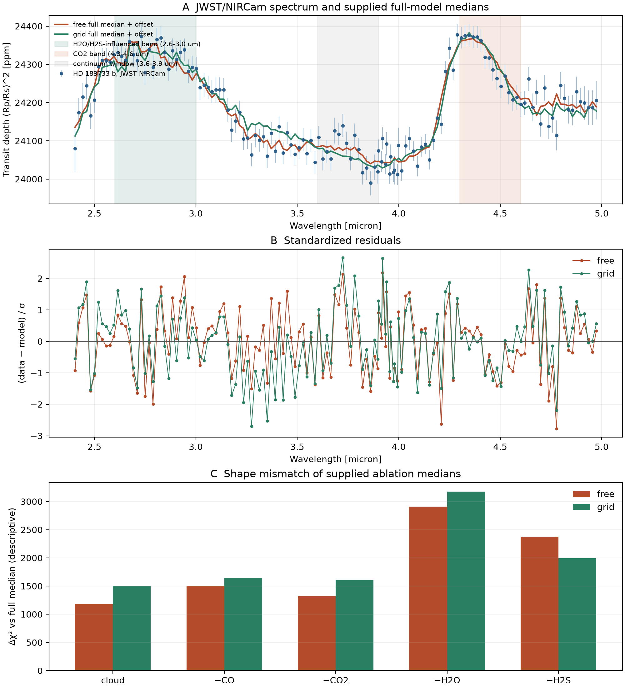

Data source notes
SHA-256, LF-normalised text
9a3dbba8088a695664b5a86010902a769198644a01623ae1dcf57a6612f8f58eBrowse 11 versioned evidence files. Table previews simply display stored rows. Consult the project report for the source, processing steps, and inference assumptions.

9a3dbba8088a695664b5a86010902a769198644a01623ae1dcf57a6612f8f58e588f0630adfa5515d918f6c463a17be45b64955ece8a2069196c81e8de126ced8e5c3ba012030287590a865a6f9c033564d25e1a100b6ad3e3cee9dc234b3ac57e0f84be365a52d4e935c50da495de11327db9a9ecfb704affdb6cfa77749191196d1eab49a022c1835346e787c8e2381826c7b324c694d06056628c1a1475677ac590d9bcad219d05e2ade08f693d8c5d0a34594905f8885e952580f768e18d65888e4727f7419fee83e7b2f5d379c74f32b14b3c6704f100ed7b68a19be30967e745251c9636968cfc297fc20210a90070b228c54aa86fa1d24f71355843d3| quantity | value | unit |
|---|---|---|
| n_wavelength_bins | 139 | count |
| wavelength_min | 2.405 | micron |
| wavelength_max | 4.974 | micron |
| weighted_mean_depth | 24183.1 | ppm |
2c56d77f7912ddedb852f3c29b89cacce53de76157d2fe0d98f9fe1b467ee9a8| model | chi2 | dof | reduced_chi2 | fitted_offset_ppm | delta_chi2_vs_full_median_curve | family |
|---|---|---|---|---|---|---|
| Cloud_only_TD_median_result | 1329.2382358649336 | 138 | 9.63216112945604 | 275.2492591419676 | 1182.017208547408 | free |
| FULL_TD_median_result | 147.22102731752554 | 138 | 1.0668190385327938 | 5.960468595491451 | 0.0 | free |
| xCO2_TD_median_result | 1467.0903573425062 | 138 | 10.63108954596019 | 204.30434260615385 | 1319.8693300249806 | free |
| xCO_TD_median_result | 1654.3539981933118 | 138 | 11.988072450676173 | 242.46602843137455 | 1507.1329708757862 | free |
6d76c811c82ae9a35d9a69c4c20fd386ca607df7ad0da386c2a476d1e9cd8168d94d4fa8c8b11e1ecf34667041cb9fbac1863bdb586d8bc51b0b03b0ee3289e7SHA-256 values verify the stored files. They do not independently validate the scientific analysis. Rebuild this page with python scripts/evidence_catalog.py followed by python scripts/render_evidence_page.py.